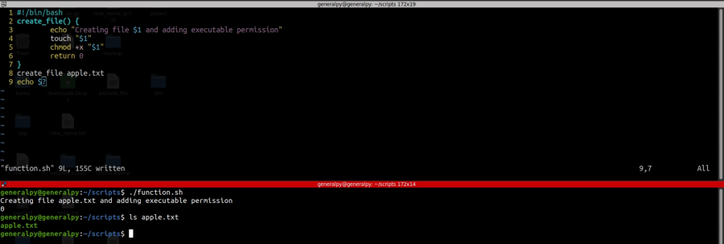
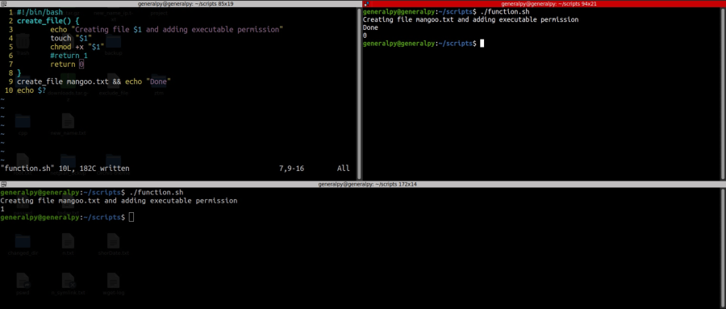
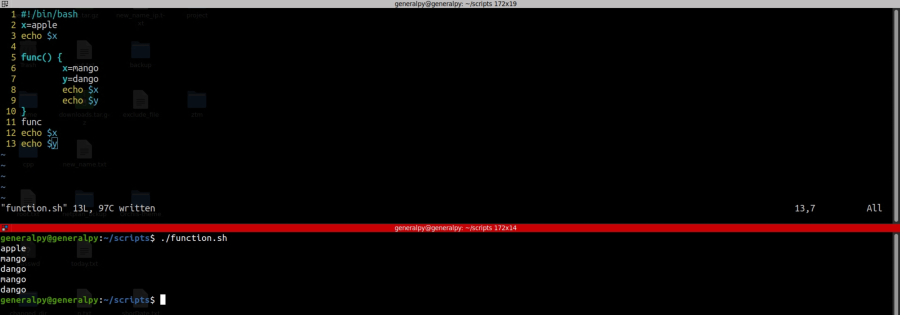
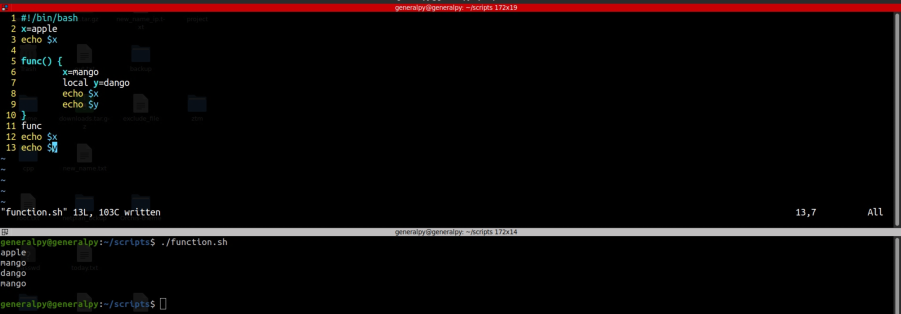

Functions are piece of code that can be used later in the script. They help to reduce redundant code, increase modularity and reduce work.
Unlike other programming languages, bash functions are limited. To define a function , syntax is :
function f_name(){
#commands
}
f_fname() {
#commands
}
To call a function, just write the name of that function just like executing a command.
f_name
In bash the parentheses after the function name are just for decoration, they don't accept argument. To accept arguments in a function, syntax is just like how as script accepts and uses arguments. $1, $2 etc are used to address arguments inside the function just like a simple script.
print_something() {
echo $1
}
print_something root
Bash functions don't return anything. When we use return statement at the end of function, it is used as a way to return exit code of that command/function. Exit code of 0 means successful termination and non zero means some kind of error.
func() {
echo "wew"
return 1
}
func
echo $? #print exit code of last command which was function in our case.

When we use && to perform multiple commands at once, the command after && only executes if command preceding && had a 0 exit code

In the image above we can see that when return 1 was written, exit code was 1 hence echo Done was not executed while it was executed after return 0 was written.
By defualt scope of variables in a bash script is global.

In above script we can see that how x was changed and how y was visible outside the function.
To make a variable inside function local keyword can be used. Local keyword can be used only inside a function.

y not visible outside the function.